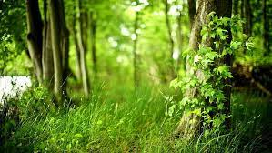
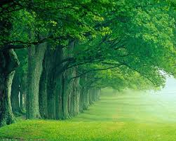
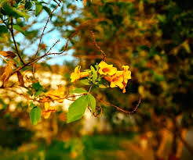
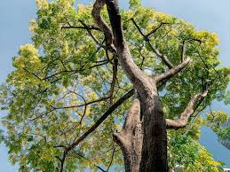
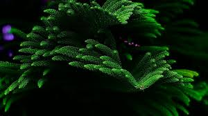
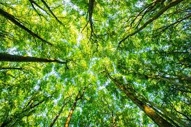
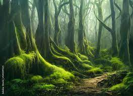
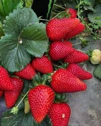
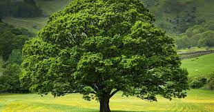

Amazing Fun Facts About Plants!
1. Plants talk to each other
For a long time, people believed that plants were simple organisms that used basic forms of intelligence to adapt to their environment. Modern times, however, have taught us that plants are more complex than we could ever have imagined.
For instance, science tells us that plants ‘talk’ to each other. They do this via their roots in a very unique way, by secreting chemicals into the soil. These chemicals, called ‘root exudates’ tell every other living thing in the root zone how the plant is doing.
Another study showed that carbon absorbed by a 40-meter tall spruce tree could be shared by shorter trees—including beech, larch, and pine—because the spruce's roots extend into their root zones.
2. Plants recognize their siblings (and give them preferential treatment)
Biologists have found that plants exhibit competitiveness amongst strangers of the same species but they are more accommodating towards their siblings.
A study led by researchers at McMaster University looked at the annual plant Cakile edentula. They found that root allocation increased when groups of strangers shared a pot - but not when groups of siblings shared a pot.
In other words, plants compete with strangers by allocating more of their roots below ground. This helps them as they fight for access to water and soil nutrients.
3. Plants react to sound
Plants aren't just passive things; they react to their environment in ways that aren't always obvious. Some of these reactions are more surprising than others, and scientists are trying to make sense of them.
Recent research has found that plant roots actually respond to environmental sound. They examined the pea plant Pisum sativum and discovered its roots were able to locate a water source by sensing the vibrations generated by water flowing below ground.
There’s also research to suggest that sound can increase the yield of plants. When treated to acoustic frequency technology, the yields of sweet pepper and tomato increased by 63.05% and 13.2% respectively.
4. Plants sense gravity
Plants know a lot more than we give them credit for. They can sense gravity and respond positively to it. Scientists call this response ‘gravitropism.’ It's similar to how we humans can sense the pull of gravity and know which way is up.
Plant cells in their roots and stems have the ability to detect the pull of gravity on their bodies, thanks to some specialized cells called statocytes. These cells contain starch grains that collect at the bottom due to the force of gravity, acting as a sort of "internal compass."
When a plant is tilted, these starch grains shift from side to side, which stimulates hormones that tell the plant which way is up. Plants will then grow toward gravity by elongating the cells on one side and shortening those on another.
5. Plants use tricks to lure pollinators
Plants are just as capable of deception as animals. In fact, some plants use lures to trick potential pollinators into visiting flowers that don't actually produce any nectar for reward. They still receive pollen with the help of the insect as it visits each flower searching for nectar.
Orchids are particularly cunning in this way. There are many species whose flowers visually mimic a female wasp and release a perfume that lures male wasps. The males pollinate the orchid as they attempt to mate with it.
Another genus called Rafflesia appears to be a delicious meal for flies, complete with the right color and texture and even the smell of rotting meat. Flies are attracted by the smell, land on the flower, and then get covered in pollen when they try to lay eggs in it. The plant tricks them into pollination
6. Plants release distress signals when under stress
The smell of freshly cut grass is actually a plant distress call.
Many plants release scents or volatile chemicals when they are stressed, attracting insects and other animals that can help them escape from a dangerous situation. For instance, when caterpillars feed on a plant, it releases chemicals to attract parasitic wasps that lay eggs inside the caterpillars and kill them.
Some plants can also send out a subtle alert to attract predators of these pests — like birds — to protect themselves against damage. For a long time, this phenomenon had only been observed in forests. In 2018, however, the University of Delaware observed this in agricultural plants too.
7. Plants know what time it is
You might know that our bodies have a clock called a circadian rhythm, which regulates our sleeping and waking cycles. But did you know that plants also have such a clock? This means that they can prepare themselves for various times of the day. Plants use sugar signals to establish this circadian phase when it’s light and dark.
Circadian rhythms determine the time when plants grow, when they open their flowers, and when they release scents. These rhythms help plants use their energy carefully so they don't starve during the night.
8. Plants know their season, but they don’t use a calendar
For plants that live in climates with drastic temperature changes, it’s important to tell when the seasons are altering.
One way plants can tell the seasons is through day length. The leaves of some plants are sensitive to how much light they are getting, and they use this information to produce seeds or flowers at the appropriate time of year.
For example, in the spring, when days become longer, a plant will receive more sunlight. When it receives enough sunlight, its leaves begin to form flowers and seeds that will reproduce for the next season.
In addition to using day length to tell the seasons, plants also sense temperature changes. Some plants live in climates with drastic temperature changes between summer and winter. For example, trees in Alaska have a long growing season during summer (about three months) but then have to survive a harsh winter that lasts six months or longer. The trees respond to this by growing very quickly during the short summers, then slowing their growth and dropping their leaves during winter.
Other plants react directly to temperature changes. Plants in colder regions only grow when temperatures rise above freezing during the day and drop below freezing at night.
9. Strawberry is the only fruit that bears its seeds on the outside
There are over 600 varieties of strawberries, each one containing around 200 seeds. The reason why a strawberry’s seeds are on the outside is because of the plant's structure, which has a central receptacle surrounded by tiny, dry fruits.
Not many people know that strawberry is a member of the rose family and not actually a berry (despite having ‘berry’ in its name!) Technically, it’s a ‘multiple fruit’, as it consists of tiny individual fruits embedded in its fleshy receptacle.
10. Trees are the longest-living organisms on earth
Many trees live hundreds, even thousands of years, sending down new roots and sprouting new branches as their bodies grow. It’s believed that the Great Basin Bristlecone Pine is the oldest living tree species. Situated in the White Mountains of California, it has an estimated age of around 5,000 years.
There are many reasons why trees live so long. One of the reasons for their long life is something called "negligible senescence." This means that rather than declining in health and productivity with age, some trees actually get healthier and more productive.
Another reason for a long life is that large trees have multiple stems or trunks and so even if one trunk dies there are others still alive. A third reason is their ability to store energy internally in their roots and trunks. This energy storage enables the tree to recover quickly from fires or other damage because it has the resources available to make new branches, leaves and roots.
Trees also defend themselves against disease with chemicals they produce called phenols. Phenols act as antiseptics and antibacterial agents that deter pests and parasites. They also make it difficult for fungi to grow on woody tissue. These phenols are stored in special cells just under the bark.